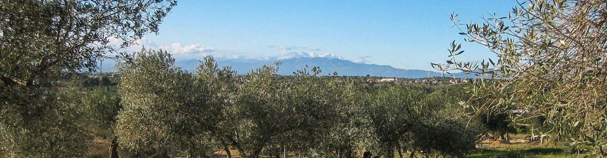

Ruta · Roses
Farem una passejada pel rodal de Roses. Voltarem el barri de mas Oliva tot seguint la Riera dels Ginjolers a la vall de l'Alzeda. Ens enfilarem lleugerament pel vessant solell, des d'on podrem…